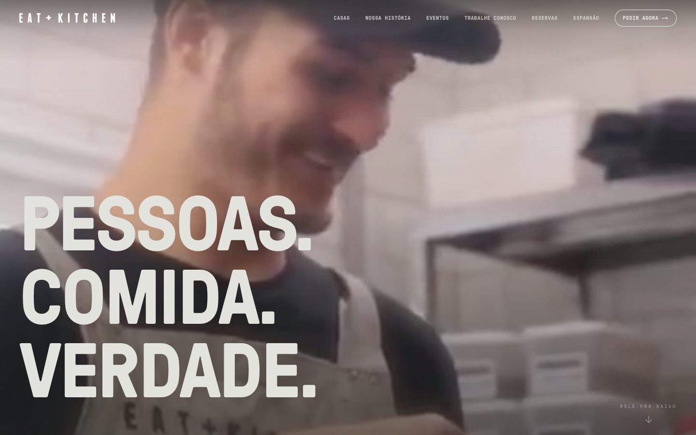
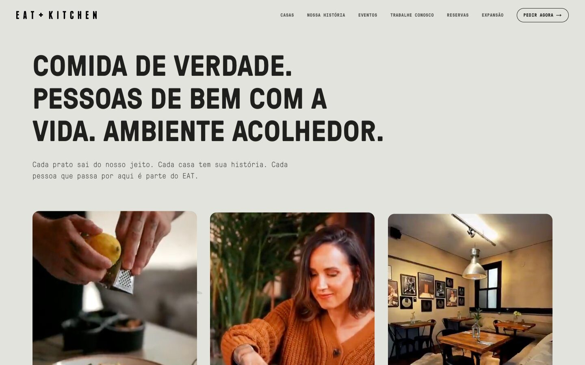
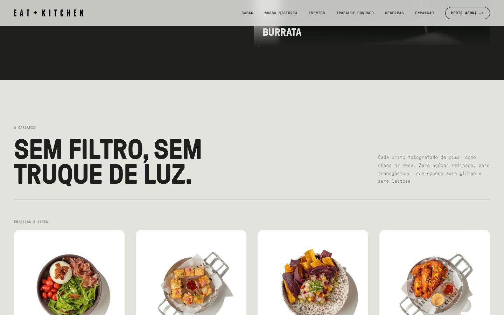
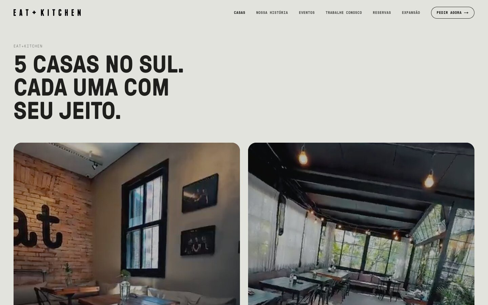
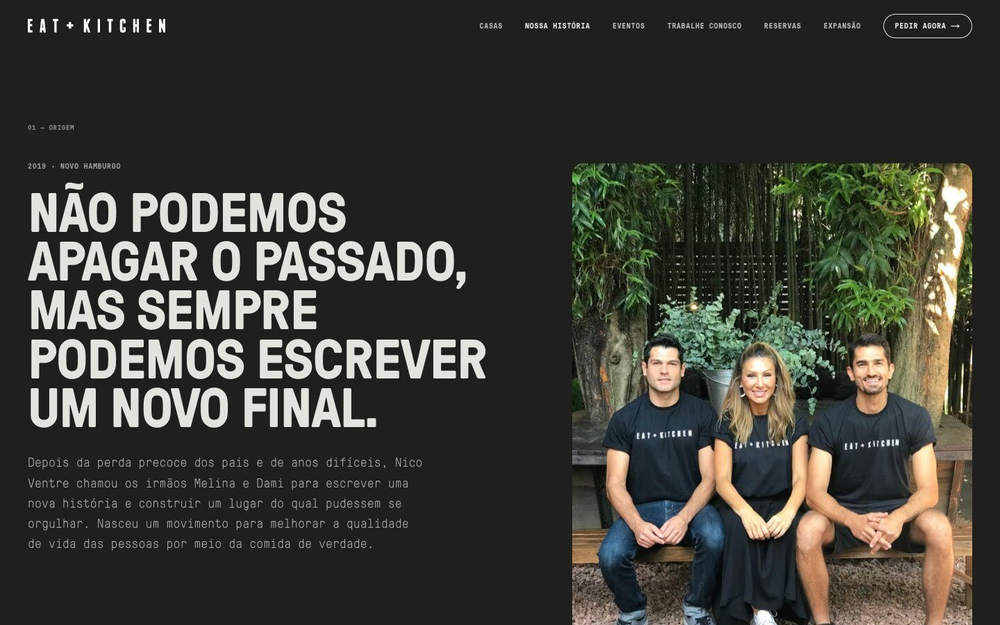
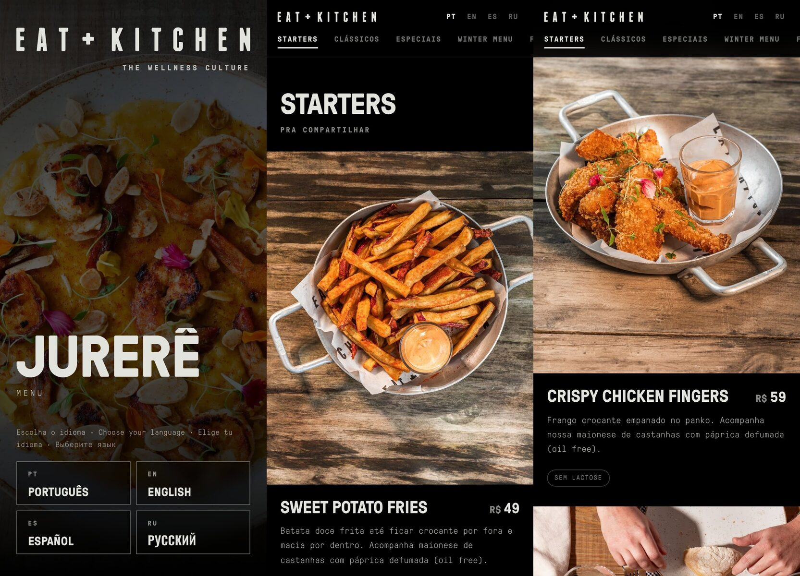

Comida de verdade, site de mentira
O EAT+KITCHEN nasceu em Novo Hamburgo em 2019 e chegou a Porto Alegre e a Jurerê Internacional. A marca tinha fotografia própria, prêmios de gastronomia, uma história de família e uma vertical de eventos. O site, montado num construtor de páginas, reduzia tudo isso a um cardápio com botão de pedido.
O desafio tinha duas pontas: dar à marca um site à altura da comida e tirar a equipe da dependência de alguém técnico para trocar um prato, publicar uma vaga ou lançar a campanha da estação.
"Sem filtro, sem truque de luz." A frase que abre o cardápio virou o critério de todo o projeto.
Editorial cinematográfico: a home como um filme em atos
A home abre com vídeo de cozinha real e o manifesto da marca — Pessoas. Comida. Verdade. — e segue em atos: os três pilares, a cozinha que muda a cada estação, o cardápio fotografado de cima como chega à mesa, as casas, a história dos irmãos fundadores e os reconhecimentos. Textura de grão em WebGL e tipografia de cardápio amarram tudo à identidade.





Um site que a equipe opera sozinha
- Painel de conteúdo: cardápio, casas, vagas e campanhas sazonais são editados pela equipe, sem código
- Eventos: formulário de briefing para casamentos e corporativos, que chega direto no e-mail da área
- Expansão: página e formulário para quem quer levar a marca a outra cidade
- Trabalhe conosco: vagas publicadas pelo próprio RH
- Atendimento: reservas, pedido pelo app e a assistente virtual da marca a um clique de qualquer página
- Domínio próprio e medição: migração do construtor de páginas para infraestrutura própria, com analytics desde o primeiro dia
Um QR, quatro idiomas
Jurerê Internacional recebe muito turista. O cardápio digital da mesa abre com a escolha de idioma — português, inglês, espanhol e russo — e mostra cada prato com foto, preço e restrições. A tradução para o russo foi revisada por IA; os poucos pratos ainda sem foto profissional usam imagem gerada por IA, sinalizada como ilustrativa até a sessão de fotos.

Feito com agentes, conferido por agentes
O site foi construído no mesmo método que aplico na consultoria: cada entrega começa num plano, é implementada por um agente de IA guiada por testes e passa pela revisão de um segundo modelo antes de ir ao ar. O resultado é um código com mais de 150 testes automatizados, entregue por uma pessoa só no ritmo de um time.
A mídia recebeu o mesmo cuidado: dezessete vídeos da marca foram recomprimidos de 63 MB para 23 MB e só carregam quando entram em cena — o site fica leve no 4G e barato de manter.